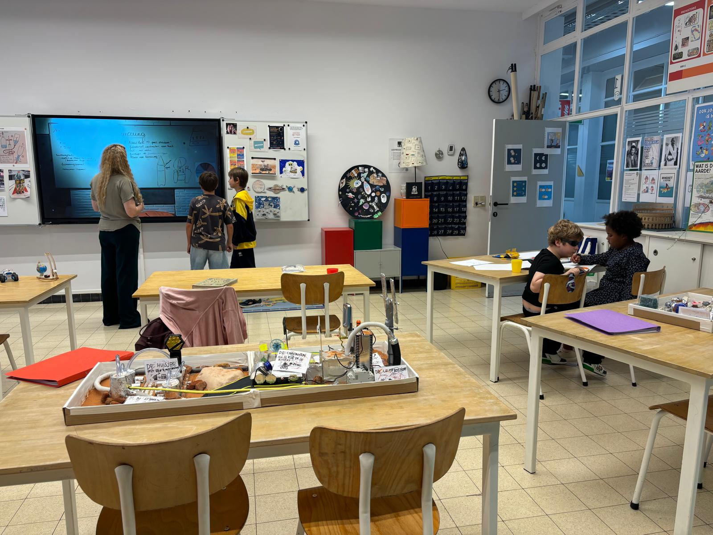
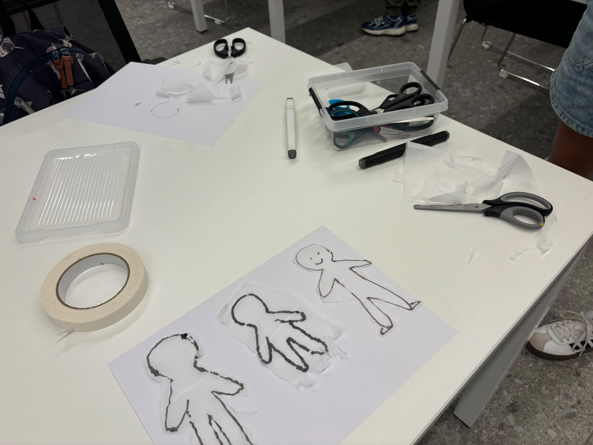
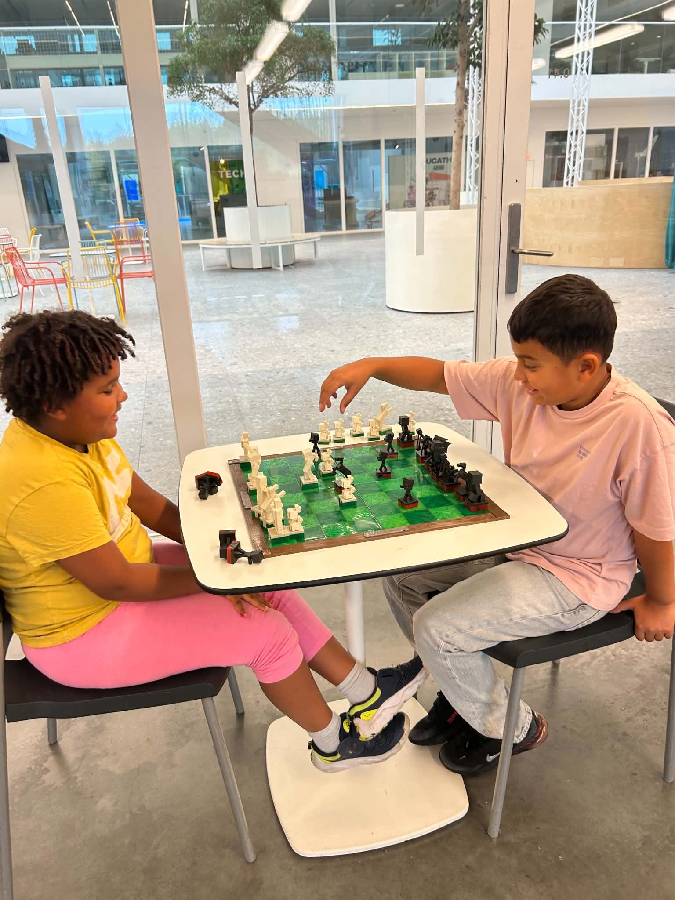

Elke dinsdag, een hele dag
De externe plusklas
in het Atheneum
Van Connectopia vzw, in de Kleine-Breemstraat 33 in Hasselt. Voor kinderen van 6 tot 12 jaar die meer uitdaging, begrip of ruimte nodig hebben.



Hoe zo'n dag eruitziet
Een veilige haven waar gelijkgestemde kinderen samen een diepgaand leertraject aangaan, met aandacht voor het proces, de samenwerking en het plezier in leren.
- Brainstormen: ideeën bedenken en nieuwsgierigheid prikkelen
- Bijleren: nieuwe dingen ontdekken en kennis vergroten
- Uitwerken: ideeën omzetten in echte projecten
- Afgestemd op de talenten van hoogbegaafde kinderen

Praktisch
Elke dinsdag
- 9u – 15u, een volledige dag
- Atheneum Hasselt, Kleine-Breemstraat 33
- 3 trajecten van telkens 10 dagen
- Later instappen kan, ook nu nog
€50 per dag €60
Zonder bijkomende kosten
Dit zit er altijd bij
- Al het materiaal waarmee de kinderen werken
- Gesprekken met de school van je kind, gratis
- Overlegmomenten met jou als ouder
Een eerste keer meedoen is gratis. Zo voelt je kind zelf of het past.